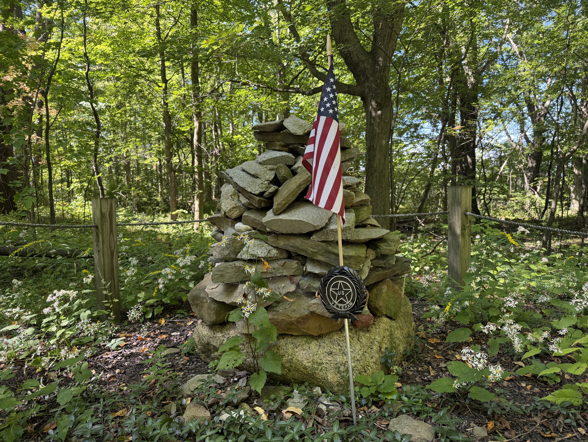

One thing that me and many others love about Penn State Behrend are the expansive woods that surround it. Like many times before, I stumbled across a trail that I'd never seen before. Curious, I followed the path, until I saw a strange rock structure. It had a fence-like structure around it and a small U.S flagged staked next to it. It wasn't large, the tallest it could have been was up to my waist.
